내 Mac을 어디서나 선명하게
풀 컬러 비디오와 꼭 맞는 화면을 iPad, iPhone, iPhone Duo에서. 마치 Mac 앞에 앉아 있는 것처럼 사용할 수 있습니다.
€4.99, 한 번만 결제. 계정 없음, 광고 없음.
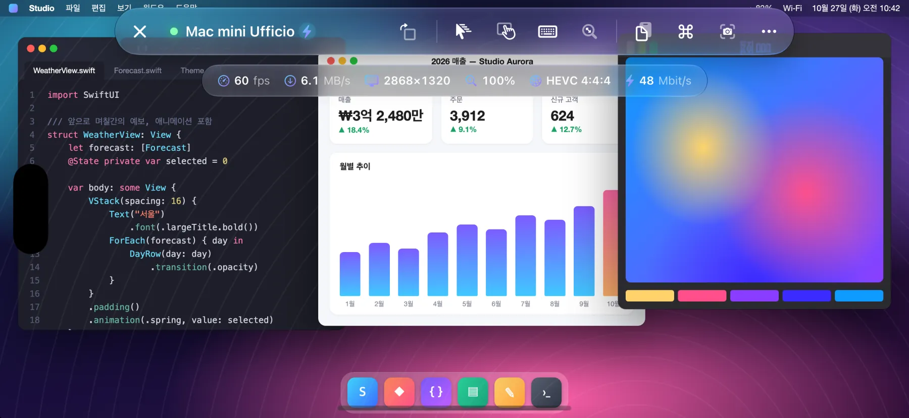
- 60 fps
- HEVC 4:4:4
- Retina
작동 방식
Open Remote PRO는 macOS에 내장된 화면 공유에 연결합니다. Apple Remote Desktop이 사용하는 것과 같은 서비스입니다.
- Mac에 아무것도 설치할 필요 없음
- 계정 필요 없음
- 데이터가 외부 서버를 거치지 않음
풀 컬러, 60 fps로 부드럽게
하드웨어로 디코딩하는 풀 컬러 HEVC 4:4:4 비디오. 텍스트는 Mac 화면처럼 선명하고, 그라디언트와 사진에도 번짐이 없습니다. 스크롤, 윈도우 드래그, 비디오 감상까지 낮은 지연 시간으로 최대 60 fps까지 부드럽게.
Mac이 비디오 모드를 제공하지 않으면 앱이 자동으로 기존 VNC 인코딩으로 전환합니다.
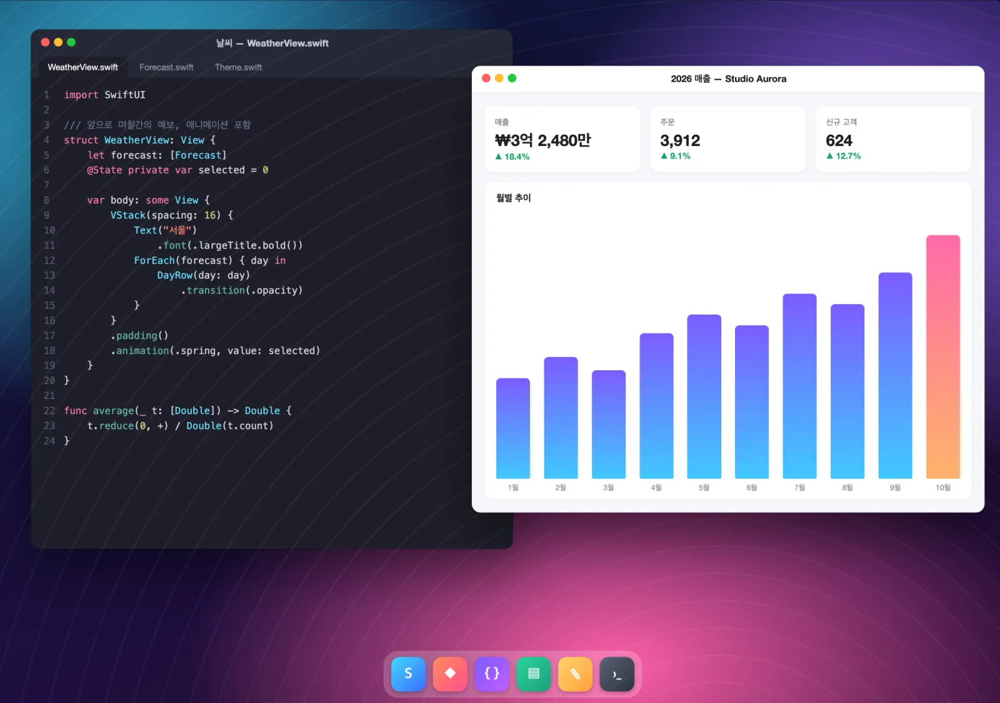
화면이 나에게 맞춰집니다
Mac이 내 화면과 정확히 같은 크기의 Retina 가상 모니터를 만듭니다. 검은 여백도, 너무 작은 글자도 없습니다. 기기를 회전하거나 Split View 또는 스테이지 매니저를 사용하거나 iPhone Duo를 펼치면 모니터 크기가 자동으로 바뀝니다.
- 키보드가 열려 있을 때는 두 손가락으로 쓸어 가려진 부분을 보거나, Mac 화면을 보이는 영역에 맞게 줄일 수 있습니다.
- iPhone에서는 화면 방향 잠금이 켜져 있어도 버튼 하나로 화면을 회전할 수 있습니다.
- 여러 대의 디스플레이를 사용하는 Mac: 탭 한 번으로 전환하거나 모두 한꺼번에 볼 수 있습니다.
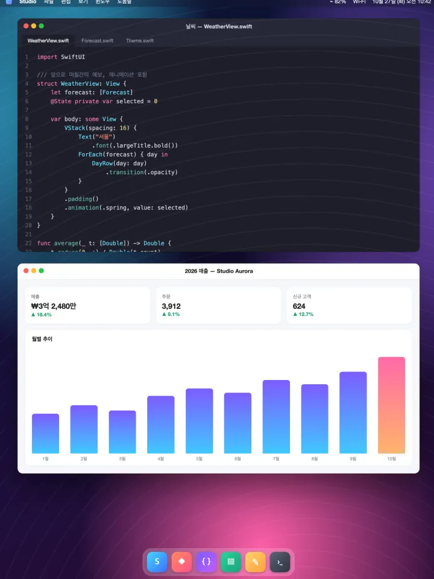
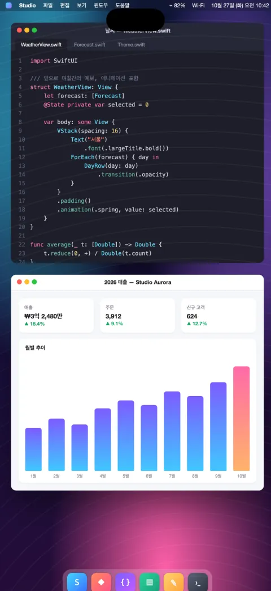
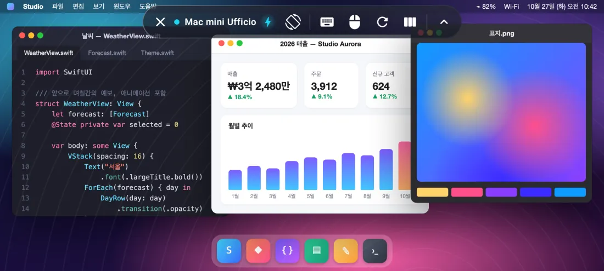
iPhone Duo에 최적화
휴대폰을 펼치면 Mac 화면도 함께 넓어지고, 접으면 외부 디스플레이에 꼭 맞춰집니다.
접으면 Mac 화면이 외부 디스플레이에 맞춰집니다. 펼치면 노트북처럼 넉넉한 7.6인치 데스크톱이 됩니다.
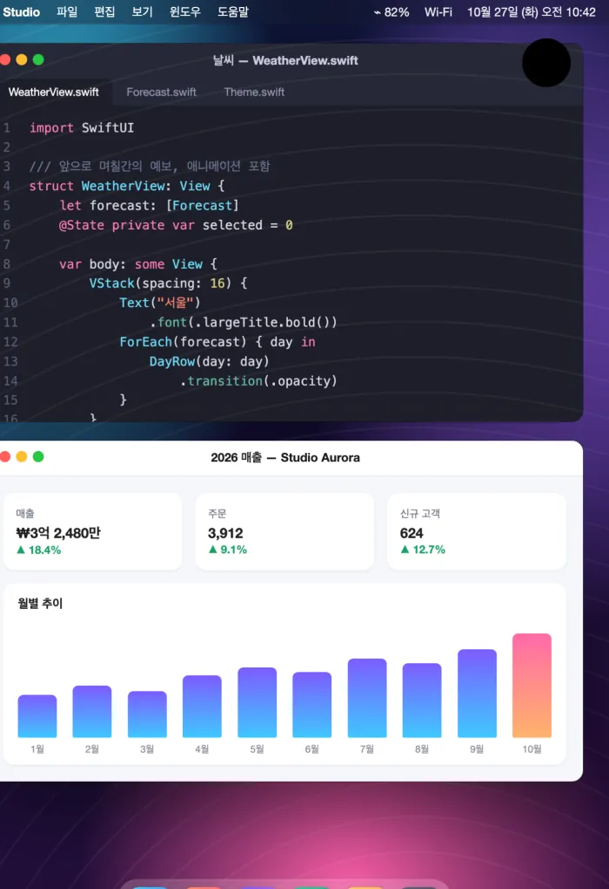
- 휴대폰을 접거나 펼치는 순간 Mac의 가상 모니터 크기가 바뀝니다. 다시 연결할 필요도, 검은 여백도 없습니다.
- 제어 막대가 외부와 내부 디스플레이에 맞춰 스스로 재배치됩니다.
- 화면 회전 버튼, 그리고 휴대폰을 돌리면 나타나는 회전 제안.
모든 Mac을 한눈에
집, 스튜디오, 사무실에서 여러 대의 Mac을 관리하는 분을 위해.
- Apple Remote Desktop을 사용하시나요? Remote Desktop에서 내보낸 컴퓨터 목록을 바로 가져올 수 있습니다.
- 각 Mac의 최근 화면과 실시간 상태(사용 가능 또는 연결 불가)를 보여 주는 카드.
- 로컬 네트워크의 Mac 자동 검색과 주소를 이용한 빠른 연결.
- SSH를 통한 원격 관리: 하드웨어, 시스템 및 디스크 정보, 설치된 앱, 화면 잠금, 잠자기, 재시동, 시스템 종료. Mac의 신원도 확인합니다.
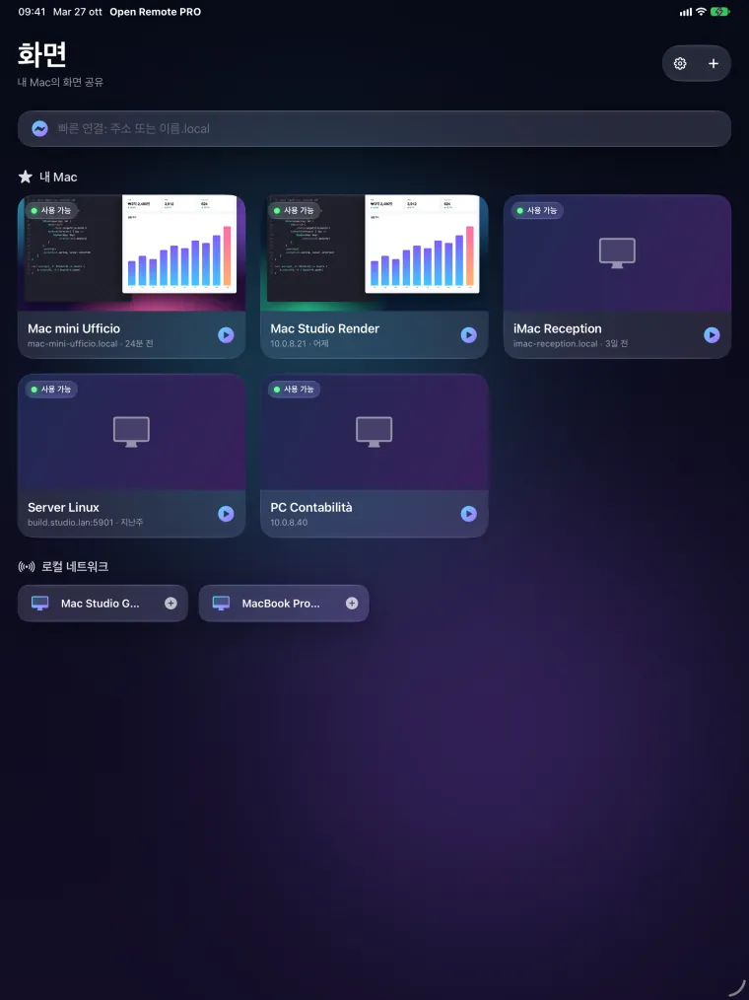
제어, 호환성, 개인정보 보호
자연스러운 제어
- 트랙패드 모드 또는 직접 터치, 두 손가락으로 보조 클릭, 끊김 없는 핀치 확대/축소.
- 관성이 적용된 정밀한 스크롤. 세 손가락으로 페이지 스크롤.
- 물리 키보드와 화면 키보드 모두 올바른 배열로 입력되며, 암호 입력란에서도 마찬가지입니다.
- esc, tab, 화살표, F1–F12, 보조 키가 있는 막대. Mission Control, Spotlight, 스냅샷 등 바로 쓰는 단축키.
- Mac과 기기 간 클립보드 공유. 화면 스냅샷을 저장하거나 공유할 수 있습니다.
- 아무것도 건드리지 않고 화면만 보는 관찰 모드.
PC와 Linux도 지원
- Windows와 Linux의 표준 VNC 서버.
- iPad와 iPhone에서는 원격 데스크톱(RDP)으로 Windows PC에 연결.
Android 버전, Google Play 출시 예정
Android 휴대폰, 폴더블, 태블릿에서 최대 60 fps까지 부드럽게(지원하는 디스플레이에서는 최대 120 fps).
설계 단계부터 개인정보 보호
- 계정 없음, 광고 없음, 추적 없음.
- 암호와 키는 기기의 키체인에 보관됩니다.
- 앱은 사용자가 지정한 컴퓨터에만 연결합니다.
스크린샷
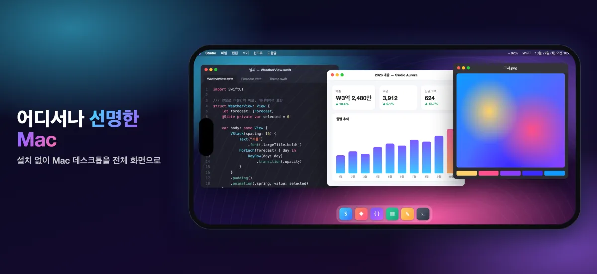
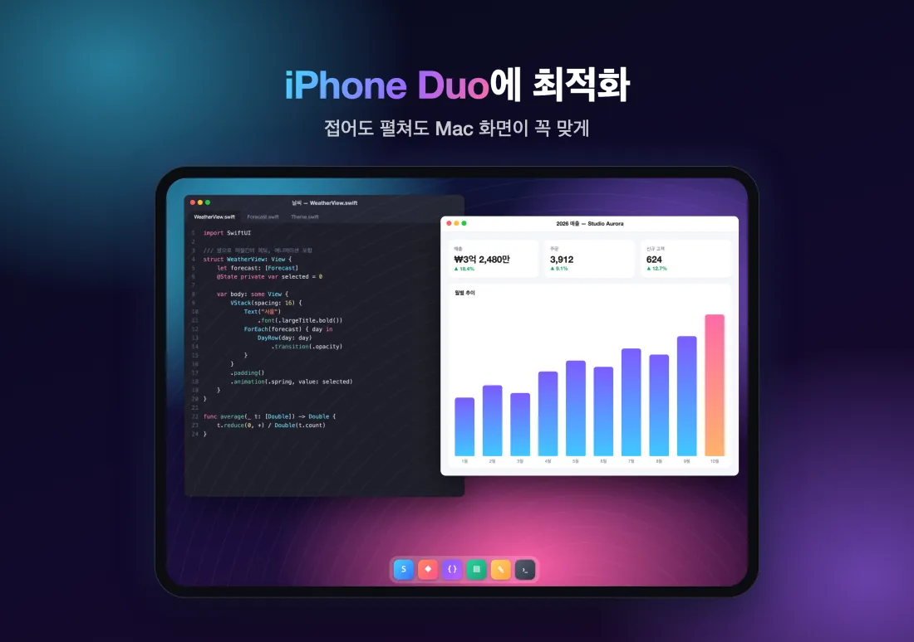
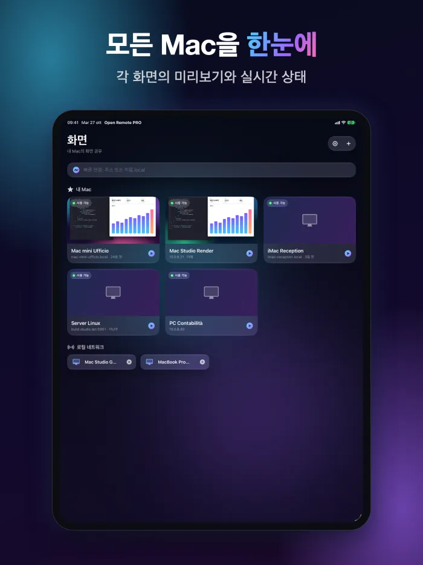
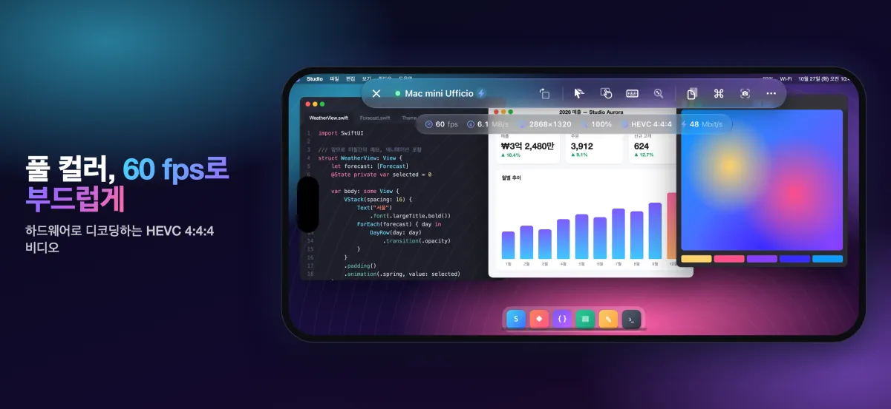
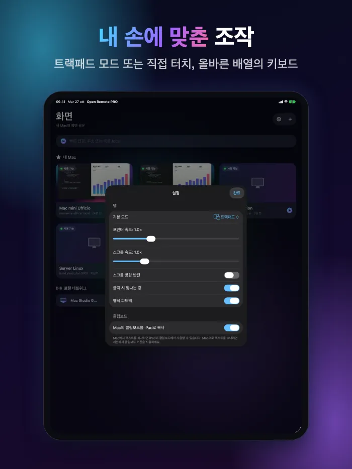
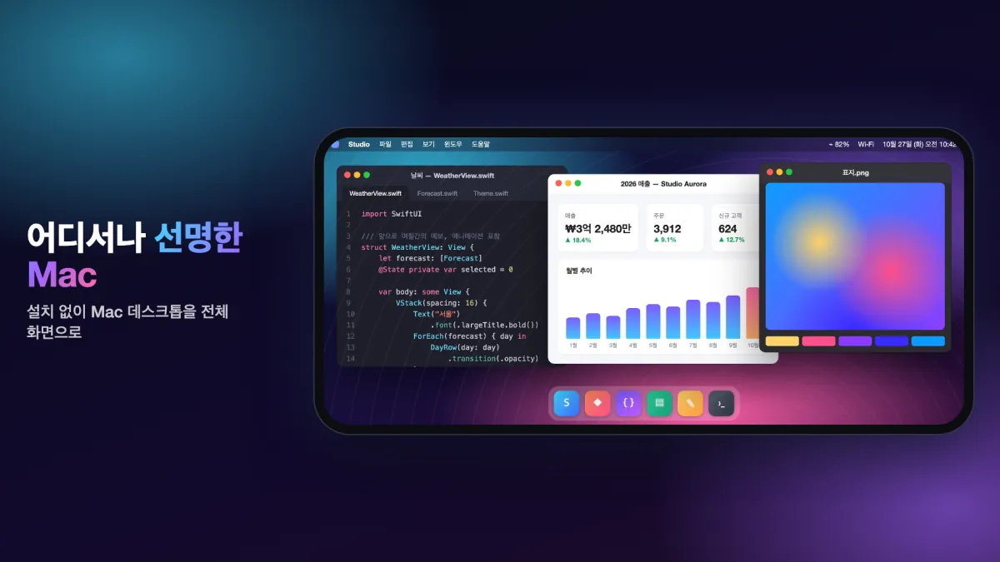
한 번 구입으로
€4.99
App Store에서 한 번만 결제하면 됩니다.
다운로드App Store유로화 사용 국가의 가격입니다. 그 밖의 지역에서는 App Store에 표시된 가격이 적용됩니다.
요구 사항
고화질 비디오를 사용하려면 Apple 실리콘이 탑재되고 macOS 14 이상이 설치된 Mac에서 화면 공유가 켜져 있어야 합니다(시스템 설정 › 일반 › 공유). 그 밖의 Mac과 VNC 서버는 기존 인코딩으로 작동합니다. 집이나 사무실 밖에서는 VPN을 사용하십시오.
자주 묻는 질문
Mac에 무엇을 설치해야 하나요?
아무것도 설치할 필요가 없습니다. Mac에서 시스템 설정 › 일반 › 공유를 열고 화면 공유를 켭니다. 그런 다음 앱에서 Mac을 추가하고(같은 네트워크에 있으면 이미 목록에 표시됩니다) 해당 Mac 사용자의 이름과 암호로 로그인합니다.
고화질 비디오에는 무엇이 필요한가요?
Apple 실리콘이 탑재되고 macOS 14 이상이 설치된 Mac이 필요합니다. 그 밖의 Mac과 VNC 서버는 기존 인코딩으로 작동합니다.
집 밖에서도 사용할 수 있나요?
네, Mac이 있는 네트워크로 VPN에 연결하면 됩니다. 화면 공유를 인터넷에 직접 노출하지 마십시오.
Windows와 Linux PC에서도 작동하나요?
네, Windows와 Linux의 표준 VNC 서버에 연결할 수 있습니다. iPad와 iPhone에서는 원격 데스크톱(RDP)으로 Windows PC에도 연결할 수 있습니다.
앱은 어떤 데이터를 수집하나요?
아무것도 수집하지 않습니다. 계정, 광고, 추적이 없습니다. 컴퓨터 목록, 암호, 키는 기기에 보관되며, 앱은 사용자가 지정한 컴퓨터에만 연결합니다.
Android 버전은 언제 나오나요?
Android 앱은 곧 Google Play에 출시될 예정이며, 휴대폰, 폴더블, 태블릿을 지원합니다.
더 많은 답변은 지원 페이지(영어)에서 확인하세요.